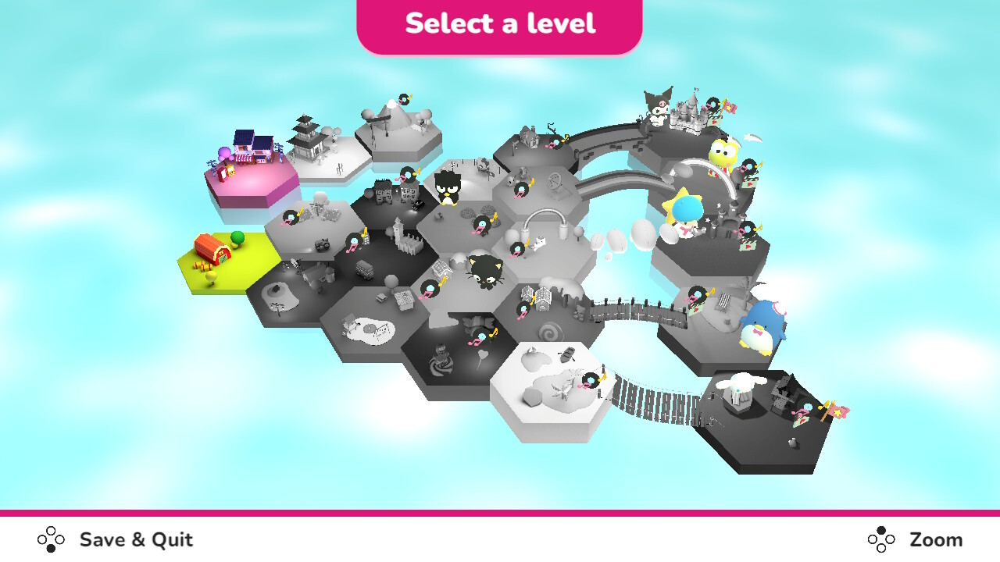
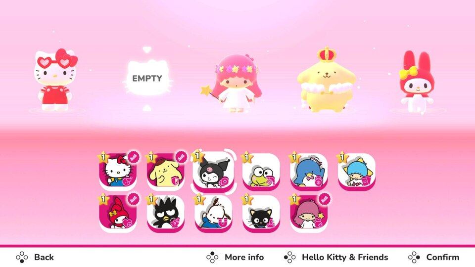
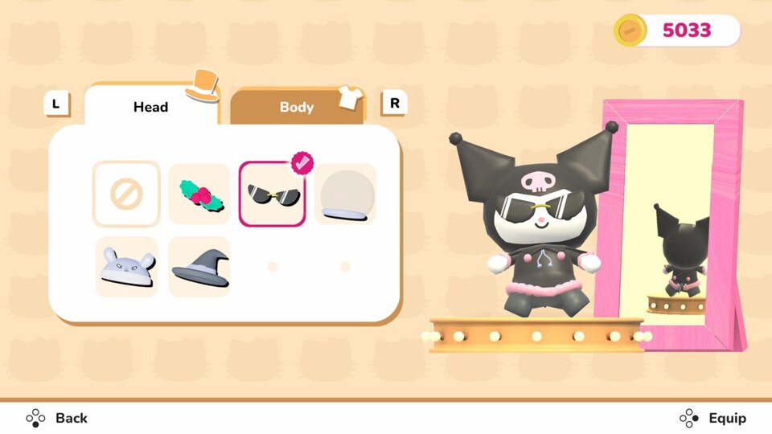
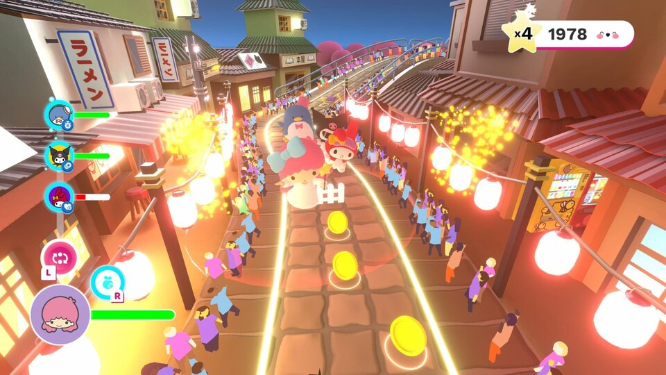
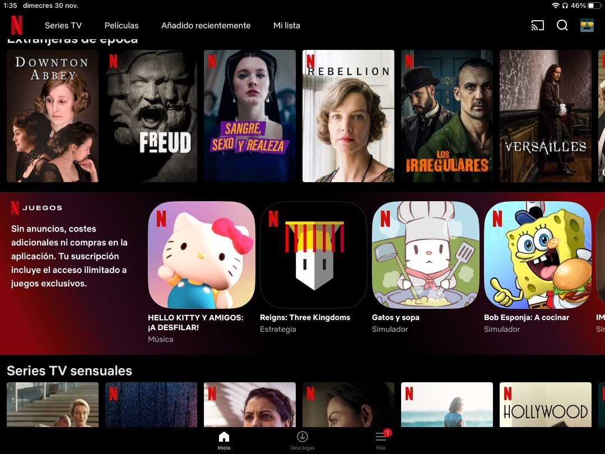
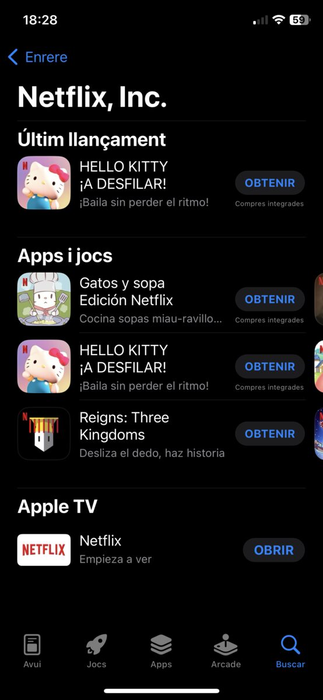
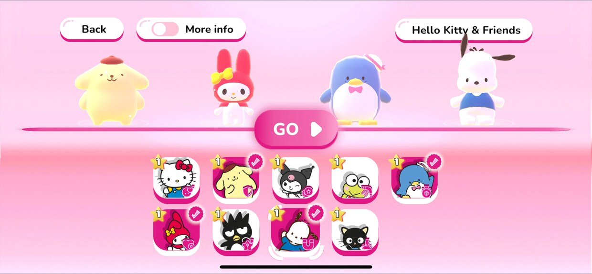
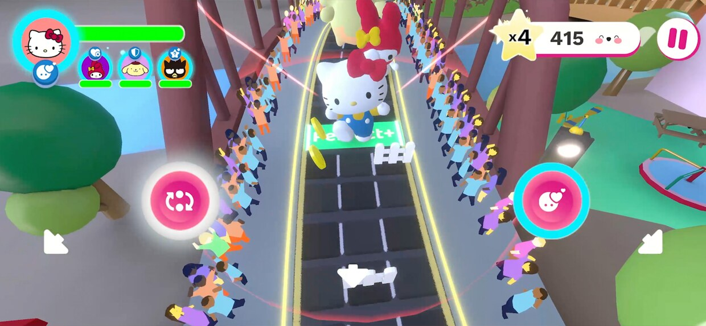
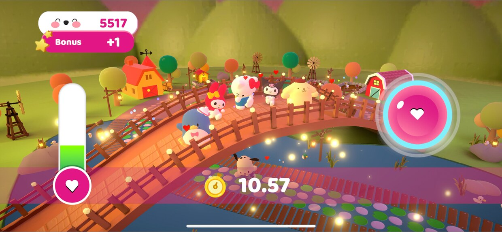

Hello Kitty and Friends: Happiness Parade
Joc de música i ritme amb els personatges de Sanrio: una mena d'endless runner amb elements roguelike on la Hello Kitty i els seus amics desfilen al ritme de la música esquivant les trampes de la Kuromi. Desenvolupat en Unity. La versió de Nintendo Switch (2023) va arribar amb contingut i controls nous; abans havia sortit com a exclusiu de Netflix Games per a iOS i Android (2022).
Tràiler (Nintendo Switch)
Vídeo oficial de Rogue Games.
Fitxa ràpida
| Camp | Valor |
|---|---|
| Rol | Desenvolupador principal (Unity, iOS/Android/Switch) |
| Estudi | Dabadu Games |
| Editor | Rogue Games (Switch) · Netflix (mòbil) |
| Llicència | Sanrio |
| Plataformes | Nintendo Switch · iOS, Android (Netflix Games, 2022) |
| Llançaments | 26 d'oct. de 2023 (Switch) · 30 de nov. de 2022 (mòbil) |
| Gènere | Música / ritme (endless runner amb elements roguelike) |
| Preu | De pagament a Switch (19,99 $) · per subscripció (Netflix, mòbil) |
| Idiomes | 15 (Switch) · 33 (mòbil) |
| Botiga (Switch) | Nintendo eShop |
Nintendo Switch (2023)
Versió pròpia per a Nintendo Switch, publicada el 26 d'octubre de 2023 amb contingut i controls nous.
Destacats
- 23 nivells amb cinc finals diferents, i 3 nivells nous més 20 pistes exclusives de Switch.
- 11 personatges de Sanrio jugables, amb vestits personalitzables (barrets, ulleres de sol) i targetes de personatge que milloren les seves habilitats.
- Controls de moviment amb els Joy-Con (a més dels botons).
- Banda sonora amb més de 40 èxits pop.
Llista de trets extreta del fitxer oficial del joc (Gematsu).
Decisions tècniques
- Addressables — la gestió d'assets la vaig implementar jo a mòbil i a Switch: paquets per plataforma, càrrega sota demanda i control de memòria.
- Controls per gestos — vam entrenar models per reconèixer els gestos dels mandos, perquè es pogués jugar ballant de manera opcional, a més dels botons i els Joy-Con.
- Arquitectura del port — separar la capa de plataforma (entrada, guardat, rendiment) del joc compartit amb mòbil, per no duplicar codi ni fer divergir les versions.
- Rendiment i memòria — ajustar el pressupost de memòria i el framerate de Switch sense retallar contingut.
- Builds, QA i certificació — jo feia les builds de Switch i mòbil (també les de la resta de jocs de l'estudi); Rogue hi posava un productor i una empresa de QA, i jo era l'enllaç tècnic, amb accés als Jira de Rogue i Netflix. Els canvis complexos que demanaven Nintendo o Netflix els resolvia jo.
- Idiomes — scripts propis per extreure els strings a CSV, portar-los a Google Docs per traduir-los i reimportar-los al joc (15 idiomes a Switch, 33 a mòbil).
Imatges
Nintendo Switch (octubre de 2023)




Premsa
VideoChums — 30 d'octubre de 2023 — 8/10 (★★★★☆)
"I've had HELLO KITTY AND FRIENDS HAPPINESS PARADE installed on my Switch for over 6 months now and have been itching to talk about it. Now that it's finally out, let me just say that this is one of my favourite rhythm games ever."
ScreenRant — 13 de novembre de 2023 — "'A Fun Experience For Any Age'"
"The music for Hello Kitty and Friends Happiness Parade is incredibly catchy and gets players up on their feet while the cheerful artistry and bright colors truly do fulfill Hello Kitty's mission to spread joy. There are 23 different levels with over 40 foot-tapping songs…"
Way Too Many Games — 2023 — 8,0/10
"In theory, Hello Kitty and Friends Happiness Parade should have been crap… Walking to a beat sounds excruciatingly boring, but somehow the developers at Dabadu Games managed to craft a pretty interesting gameplay loop… It's actually stupidly fun as a 'pick up and play' experience."
NoobFeed — 20 d'octubre de 2023 — 76 (7,6/10)
"Plainly put, Hello Kitty and Friends Happiness Parade is just a straight-up good time."
Més crítiques
Nintendojo — 26 d'octubre de 2023 — 83% (B-)
"By the time I was done playing, I put down my controller and thought, 'That was actually much better than I expected.' … While the game has a lot of room for improvement, it's also the best Sanrio game I've played so far across a number of different platforms over the years."
Pure Nintendo — 2023
"…succeeds at being an upbeat, breezy, and bouncy rhythm game that's enjoyable enough to spend some time with."
Digitally Downloaded — 2023
"Hello Kitty and Friends Happiness Parade is actually a pretty decent thing, worth spending some time with, for anyone that enjoys cute things and uncomplicated charm."
GameCrate — 2023 — 6/10
"Hello Kitty and Friends: Happiness Parade is an adorable title that brings a lot of the beloved Sanrio characters to the rhythm game genre… Overall, the art and music felt very faithful to the brand."
Christ Centered Gamer — 26 d'octubre de 2023
"Originally released on mobile devices through Netflix, Hello Kitty and Friends: Happiness Parade is a surprisingly tough music game with roguelike elements."
Ladies Gamers — 26 d'octubre de 2023 — veredicte: "I Like it a Lot"
"Hello Kitty and Friends Happiness Parade is a great game for young and old… The K-pop song list added hugely to the fun, and the colourful and cute world was much to my liking."
Mòbil (Netflix Games, 2022)
Primera versió, exclusiva de Netflix Games per als subscriptors del servei i publicada a iOS i Android el 30 de novembre de 2022. Es va retirar del servei el 16 de març de 2026.
Destacats
- Més de 780.000 jugadors.
- Exclusiu de Netflix Games (iOS/Android).
- Diverses actualitzacions de contingut gratuïtes després del llançament, que van afegir personatges nous, vestits i complements.
- Pocket Gamer el va incloure entre els jocs de la setmana.
Imatges
Exclusiu de Netflix Games (novembre de 2022)

Llançament a l'App Store (novembre de 2022)

Captures del mòbil (App Store)



Premsa
Pocket Gamer — 1 de desembre de 2022 — "5 new mobile games to try this week"
"Rounding out the Netflix releases is Hello Kitty Happiness Parade, which lets players bop their heads to the beat while helping Hello Kitty parade around town to everyone's delight. Players can make friends with new allies and learn abilities to boost the festivities, all while avoiding Kuromi's traps at the same time."
Pocket Gamer — 6 de desembre de 2022 — llançament
"The latest arrival to Netflix's mobile game storefront, Hello Kitty Happiness Parade, has officially launched. This endless runner in the same vein as games like Temple Run or Subway Surfers sees you hit a Sanrio-themed world as you navigate numerous challenging stages dodging obstacles and vibing to an absolute banger of a soundtrack."